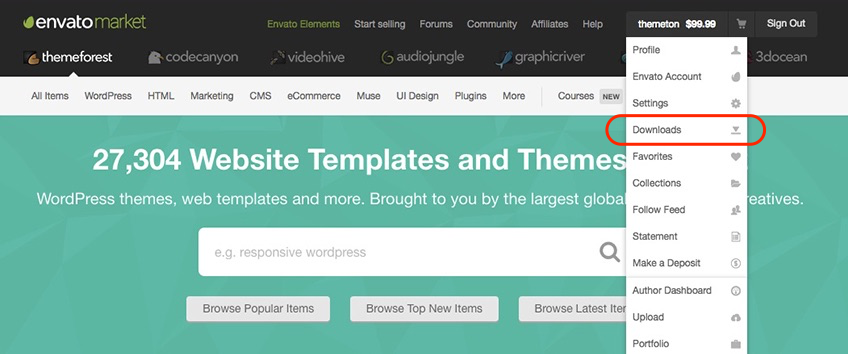
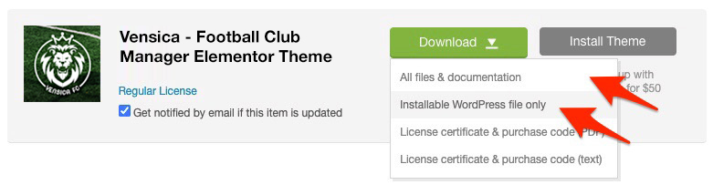
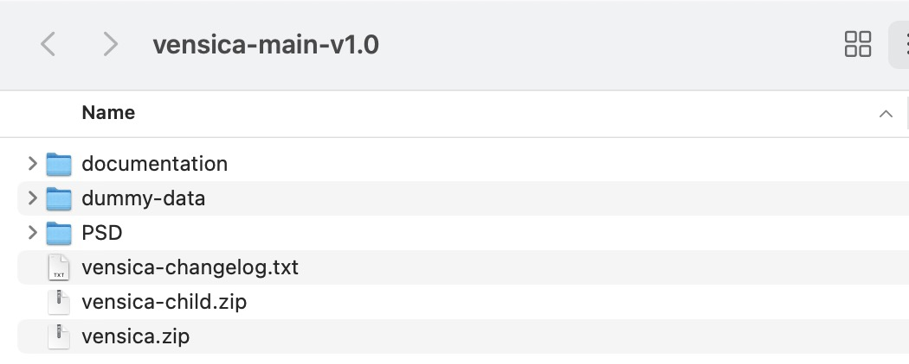
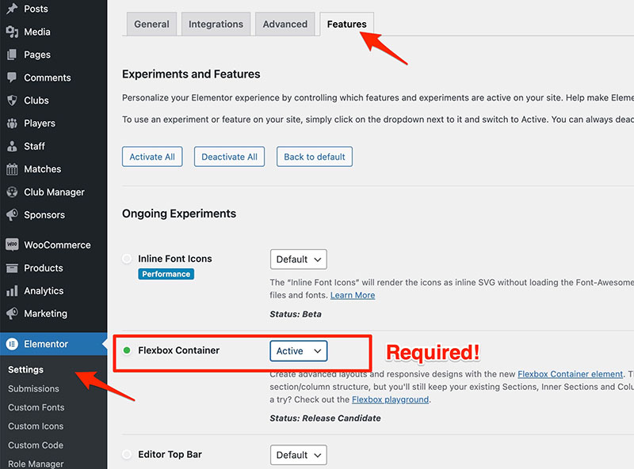
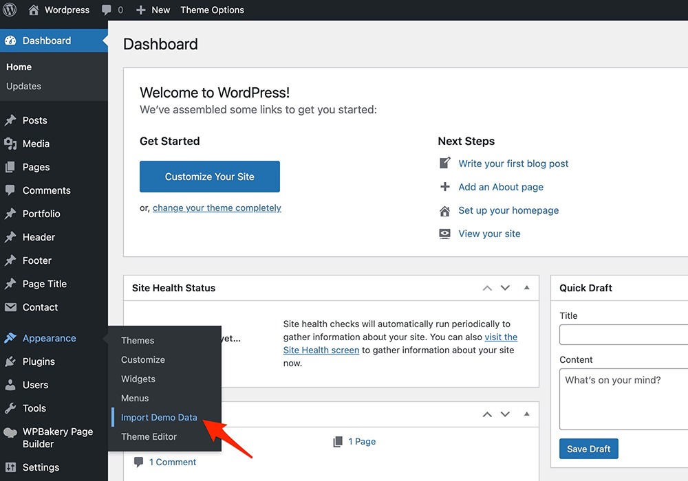
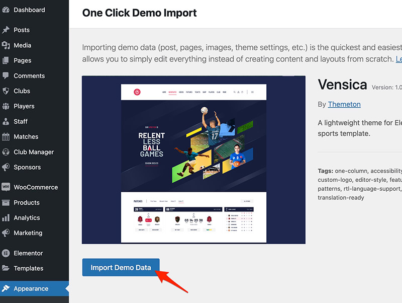
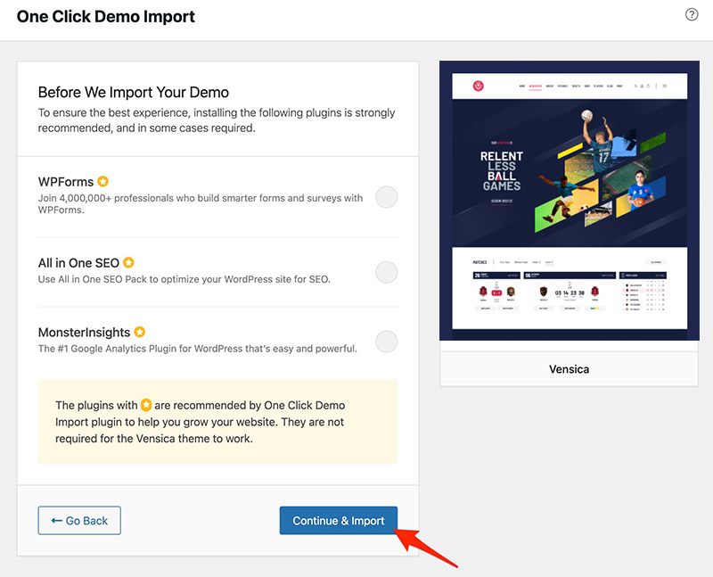
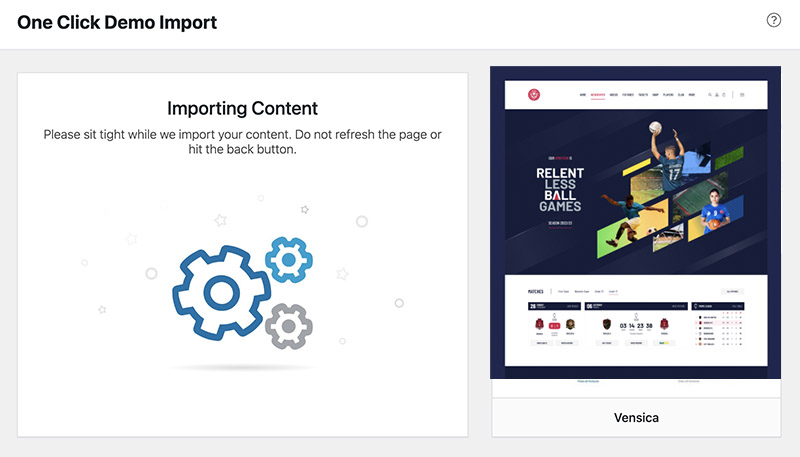
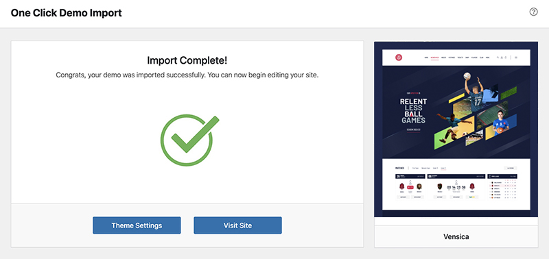
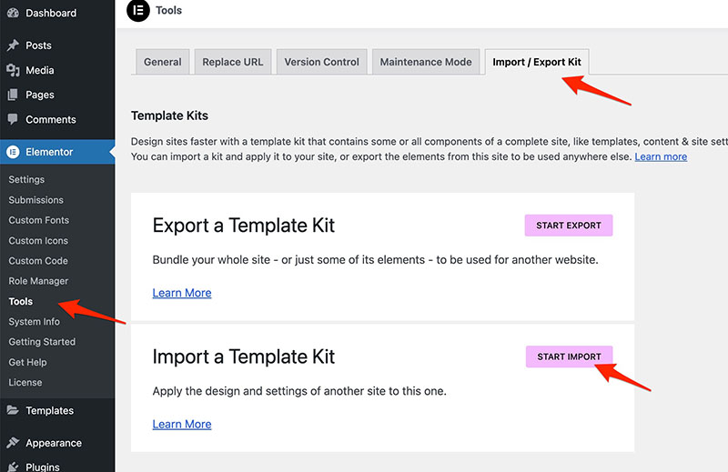

Documentation
An overview of Vensica, how to install and use, theme options and examples, and more.
An overview of Vensica, how to install and use, theme options and examples, and more.
We would like to thank you for purchasing Vensica!
This documentation file helps you to understand the whole theme concept and how it works. You should read all sections of the file before start your work. Here have multiple detailed explain of elements, theme sections and included video tutorials.
If you have any questions that are beyond the scope of this help file, please check out and search for Forum page.
After that you still can't find the solution yet, please leave a ticket on Support system then support agents help your issue.
Surely you have already installed WordPress on your server. If you don't installed it yet and you are new to WP and have problems installing it, you might want to check out following tips.
You need to download theme files after you've purchased the it. Following image describes downloads section of the item and you have 2 download choices.
Visit Downloads menu from your profile dropdown.

Please click on Download (green) button and choose your options.

Downloading All Files gives you a all-files.zip file with all the content listed below
Downloading the installable WordPress theme only gives you the vensica.zip file.
You can either choose to upload the theme via WordPress upload function or via ftp to your site.
Appearance -> ThemesInstall Themes tabVensica.zip file (it is located in the folder you've downloaded from ThemeForest).Install Now buttonwp-content -> themes directoryAppearance -> Themes of your dashboard and Activate the theme.After the activation you see this notice at top of your dashboard. This theme requires those three additional plugins and you need to install those.
Please click on Begin insalling plugins.
Please install required plugins from the notices bar link or Appearance => Install Plugins.
Select all the recommended plugins and Install them.
Please wait a moment until the installation process have been completed.
Activate all of the plugins here.
Envato Toolkit plugin requires MarketPlace username and API Key. You can get API key from your Settings tab of ThemeForest account. Lets provide those infomation and get theme update anytime and easily.
Please make sure you have installed all the recommended plugins (previous steps) on your site before you jump into this settings. If you are not, you could take demo data partially and might do yourself manually later on OR do things again from scratch.
Our theme uses Flexbox Container feature of Elementor builder on every single layout of the demo site. So, it is Achilles' heel of the demo content and make sure you're activated on Elementor->Settings->Featues before you move on to the data importing steps.
The quickest and easiest way to take all the data and configurations once is choosing One click data option.
In order to take all the advatages of the theme you should click on Appearance => Import Demo Data link.
    
Please wait for a while until imports all the content.
This is the tast but not least step in order to style your site like the demo. Elementor has an option to export predefined styles as a kit and you need to import it at the end of content importing. This steps enables your header, footer and players loop, as well as whole website styling with site settings. You can find kit export from dummy-data/vensica-kit.zip from your downloaded archive from ThemeForest.

Please make sure you backup your existing theme folder before updating. Additionally we recommend performing the update on a development site before making it on your live site.
Hope you have provided your account information in Envato Toolkit plugin. If you go to the plugin page, you'll see similar to following image. Let's click on Update automatically link at right bottom. This is a most efficienat and easy way to integrate latest verion on your site.
After clicking to auto-update, you’ll see the confirmation that everything worked correctly.
Go to the Appearance => Themes and activate another theme than Vensica such as TwentyTwelve, TwentyThirteen or Vensica child theme. Delete the old version of the theme because folder name existing error comes up when we try to install it without deletion. Then install the theme again as you see early in this documentation.
Usually updating a theme means replacing the old files with the new ones. You can see changelog.txt file from the new download archive and you can get updated files list as modified/added and deleted. Upload and overwrite those files on your theme directory.
If theme changed lots of files and you really hard to collect changed files, there is a better way to do it when it comes to WordPress themes.
WordPress treats two version of the same theme as different themes. That is, if you have Vensica v1.2 and v1.3 in your wp-content/themes folder they are treated as two different themes independent of each other.
That means you can have multiple version of the same theme installed on your blog. So whenever there is a new version of your theme available, instead of replacing or deleting the files of the older version follow this procedure.
The main advantage of following the above procedure is you can quickly switch back to the old version of the theme if you find any problems with the new version or if it clashes with any plugins you are using.
Thank you to all who developed following projects/products. We really appreciate your support and time. We definitely couldn't do this template without you. We wish you all the best.
Special thanks to: